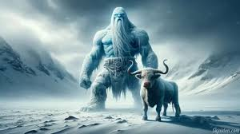

Cómo se creó el mundo
Ginnungagap y los Reinos Primordiales
Antes de que existiera el mundo, había un vasto vacío llamado
Ginnungagap. Este abismo sin forma estaba rodeado por dos reinos
opuestos:
-
Niflheim, al norte, un mundo oscuro y helado, lleno de niebla
y nieve, donde existían fuentes heladas y ríos congelados.
-
Muspelheim, al sur, un reino ardiente y abrasador, lleno de
fuego y lava. Muspelheim estaba habitado por gigantes de fuego
y su guardián era el gigante Surtr, un ser colosal con una
espada llameante.
Con el tiempo, el calor de Muspelheim comenzó a derretir el hielo
de Niflheim, y de este contacto surgieron las primeras gotas de
agua. De este derretimiento, nacieron los primeros seres vivos.
El Nacimiento de Ymir y Audhumla

Del hielo derretido en Ginnungagap surgió Ymir, el primer gigante,
una criatura enorme y primitiva. Mientras Ymir dormía, su sudor
dio origen a otros gigantes, conocidos como jotuns. De su axila,
nacieron un hombre y una mujer gigantes, y de una de sus piernas
nació otro ser gigante.
Junto a Ymir, apareció también una gran vaca llamada Audhumla. La
vaca se alimentaba lamiendo bloques de sal en el hielo, y al lamer
el hielo, descubrió poco a poco una figura humana. Esta figura era
Buri, el primer dios, que salió completamente formado después de
ser liberado por Audhumla. Buri tuvo un hijo llamado Borr, quien
se unió a una giganta y tuvo tres hijos: Odín, Vili y Vé.
La Muerte de Ymir y la Creación del Mundo
Odín, Vili y Vé, los tres hijos de Borr, crecieron y se hicieron
poderosos. Reconociendo la naturaleza caótica y peligrosa de
Ymir y sus descendientes, decidieron que debían acabar con él
para crear un nuevo orden. En una feroz batalla, los hermanos
mataron a Ymir. Su muerte fue el primer acto de creación. A
partir del cuerpo de Ymir, Odín y sus hermanos crearon el mundo:
- La carne de Ymir se convirtió en la tierra.
- Su sangre formó los océanos, ríos y lagos.
- Sus huesos se transformaron en montañas.
-
Sus dientes y fragmentos de hueso se convirtieron en rocas y
piedras.
- Su cráneo fue levantado para formar el cielo.
- Su cerebro se convirtió en las nubes.
Para sostener el cielo, los dioses colocaron cuatro enanos en
cada esquina, llamados Nordri, Sudri, Austri y Vestri (norte,
sur, este y oeste), quienes mantienen el cielo en su lugar.
La Creación de los Astros y Midgard
Odín, Vili y Vé también tomaron chispas de Muspelheim y las
arrojaron al cielo, creando el sol, la luna y las estrellas. Estos
astros iluminaban los mundos y marcaban el paso del tiempo.
Para proteger el nuevo mundo de los ataques de los gigantes, los
dioses construyeron Midgard (la Tierra) a partir de las pestañas
de Ymir, formando una muralla mágica que resguardaría a los
humanos y evitaría que los gigantes entraran.
La Visión del Destino y el Ragnarök
A diferencia de muchas otras mitologías, en la mitología nórdica, el destino del universo es cíclico y está marcado por el Ragnarök, una batalla final en la que los dioses, gigantes y otras criaturas lucharán y el mundo será destruido y renacido. Los dioses saben que un día enfrentarán esta gran batalla y que la mayoría de ellos perecerán, pero también saben que, tras la destrucción, el universo renacerá y un nuevo ciclo comenzará.
Así, la creación del mundo en la mitología nórdica es una historia de sacrificio, destrucción y creación. Los elementos de la naturaleza y de la vida misma surgen de la muerte de un ser primordial, y el destino de todas las cosas está inevitablemente entrelazado en un ciclo de destrucción y renacimiento.